Shisui, Chiba: things to do, food and stays
Shisui · Chiba
Shisui
Highlighted on the Chiba map.
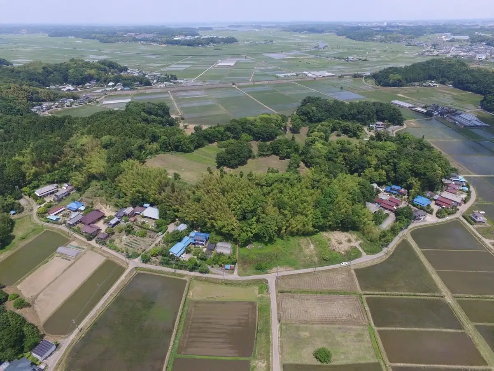
Stay
きのえね ＳＡＫＥ ＣＡＭＰ ＾
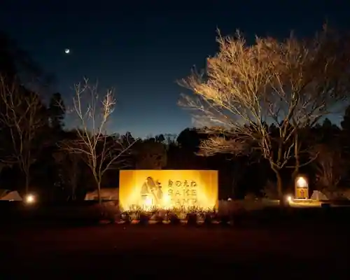
Kinoene SAKE CAMP ^
Inn in Mabashi, Shisui with ski access.
Dining
ラーメンショップ 椿 酒々井SP前店
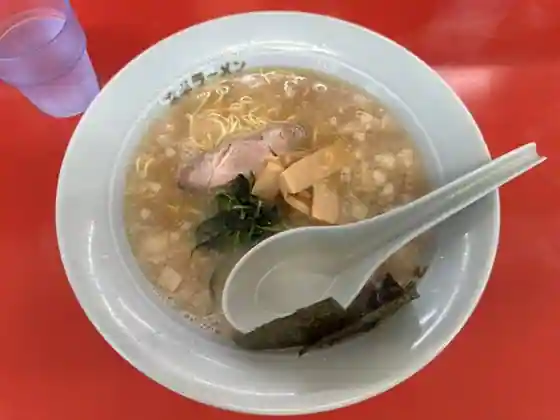
Ramen Shoppu Tsubaki Sake (Kurikaesi) I SP Mae
鶏白湯そば 鶏すけ
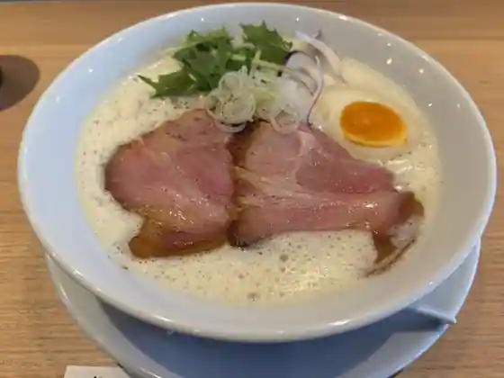
Niwatori Sayu Soba Niwatori Suke
しすい亭
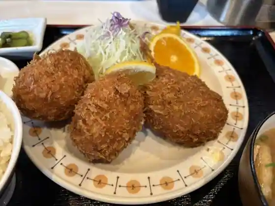
Shisui Tei
酒と二十四節気料理 きのえね omoya
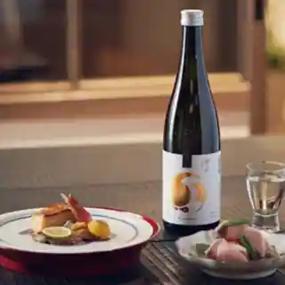
Sake To Nijushi Sekki Ryori Kinoene omoya
木乃家
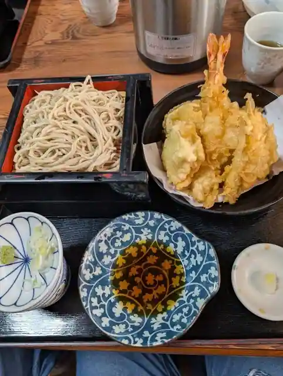
Ki No Ie
石臼自家挽き蕎麦 みなもと
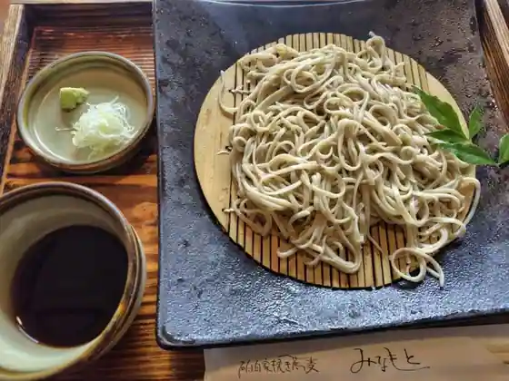
Ishiusu Jika Hiki Soba Minamoto
タンメン トナリ 酒々井店
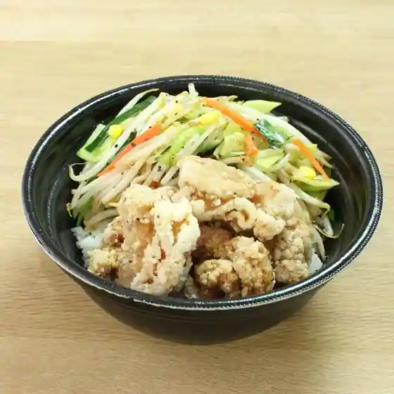
Tanmen Tonari Sake (Kurikaesi) I
川豊 酒々井プレミアウトレット店
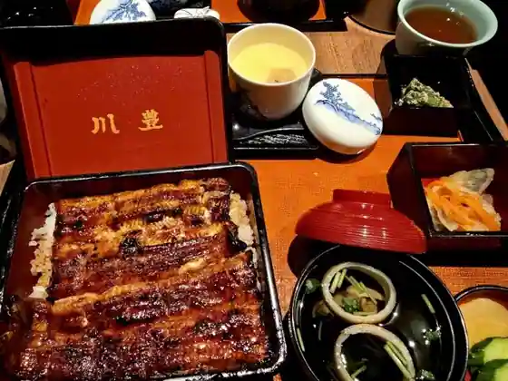
Kawa Yutaka Sake (Kurikaesi) I Puremiautoretto
久留実
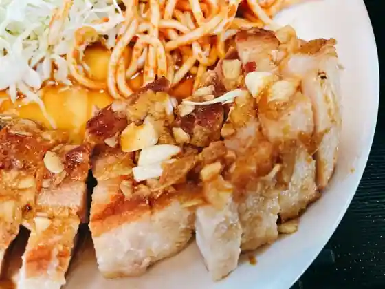
Kuru Mi
ひらりん
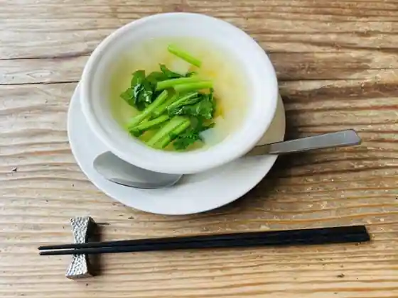
Hirarin
麺屋 青山 酒々井店
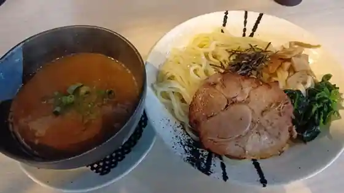
Men Ya Aoyama Sake (Kurikaesi) I
あんかけ屋
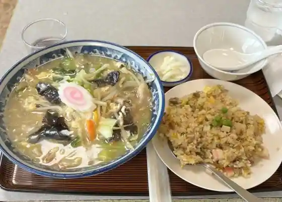
Ankake Ya
ロッカウェイバーガー
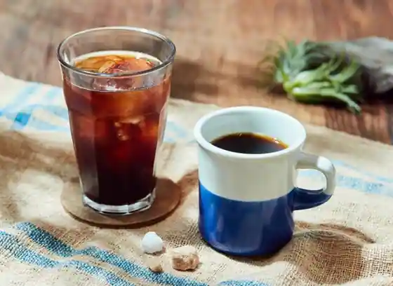
Rokkauei Burger
ICHISARA DINING HILLS CAFE
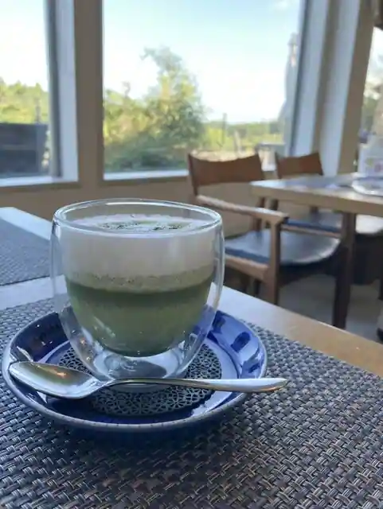
ICHISARA DINING HILLS CAFE
マッチャハウス抹茶館 酒々井プレミアムアウトレット
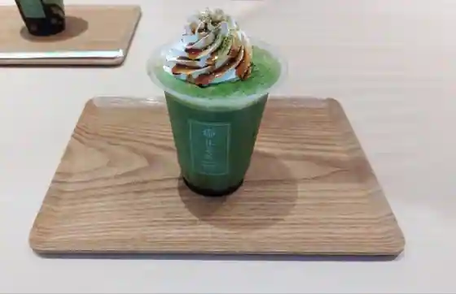
Matcha House Matcha Kan Sake (Kurikaesi) I Puremiamuautoretto
たんぽぽ
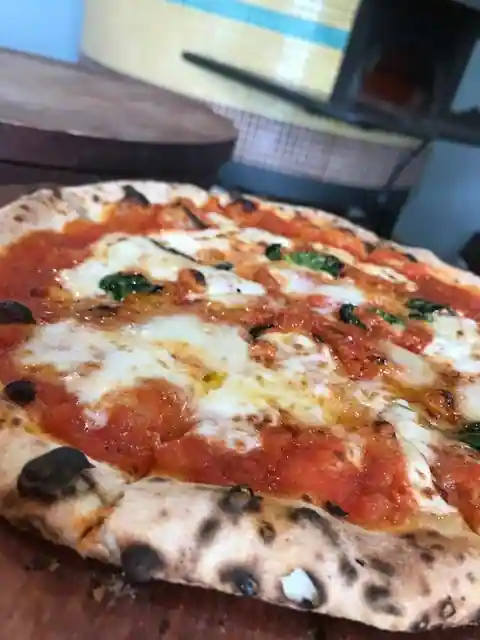
Tanpopo
はんなり
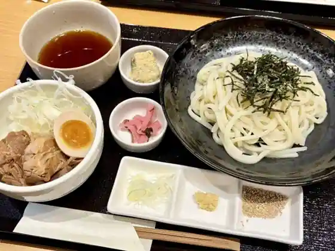
Hannari
蒼龍唐玉堂 酒々井プレミアム・アウトレット店
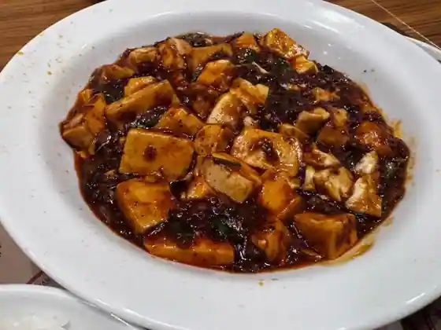
Soryu To Kyokudo Sake (Kurikaesi) I Puremiamu Autoretto
カフェコムサ 酒々井プレミアムアウトレット店
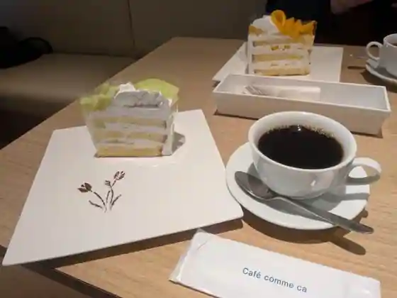
Cafe Komusa Sake (Kurikaesi) I Puremiamuautoretto
おすかる
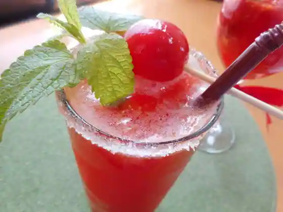
Osukaru
オールドヒッコリー
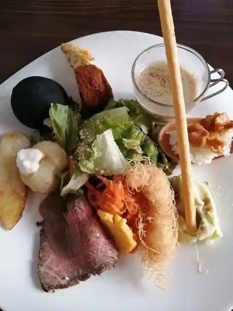
Orudohikkori
総の台所 酒々井PA(上り)店
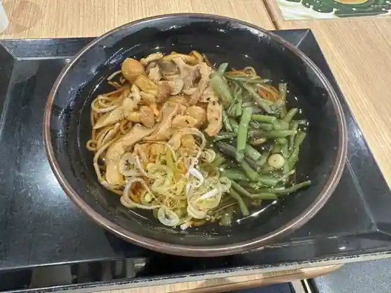
So No Daidokoro Sake (Kurikaesi) I PA(Nobori)
酒々井パーキングエリア(下り線) ブレッドコーナー
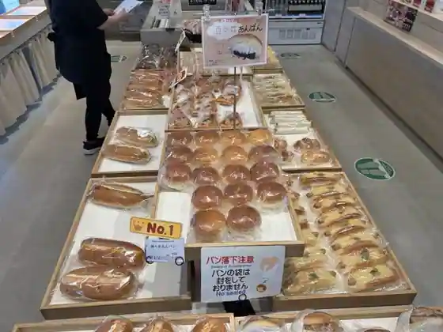
Sake (Kurikaesi) I Pakingueria (Kudari Sen) Bureddokona
焼肉車
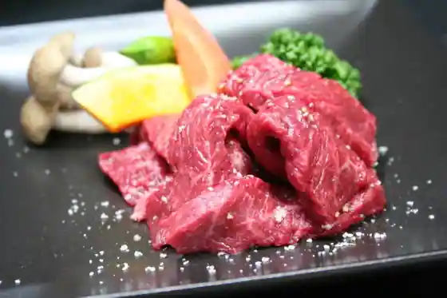
Yakiniku Kuruma
Sights
Shisui Puremiamu Autoretto
Iinuma Honke Ki no Enemagari Ie
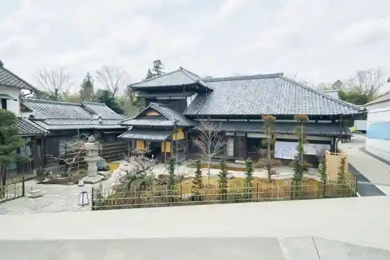
Shisui Parking Area (Kudari)
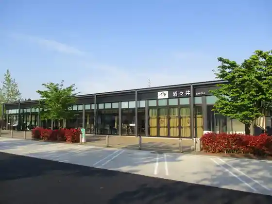
Motosakura Castle Ruins
Shisui Onsen Yu Raku Village
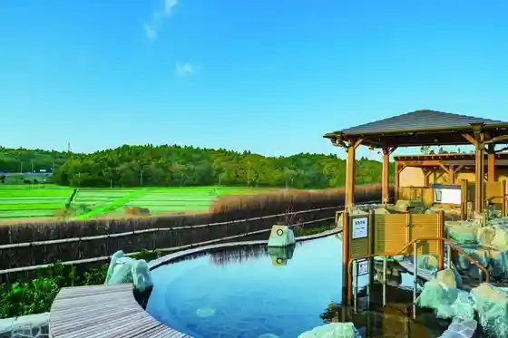
Shisui Parking Area (Nobori)
Marugotoshisui